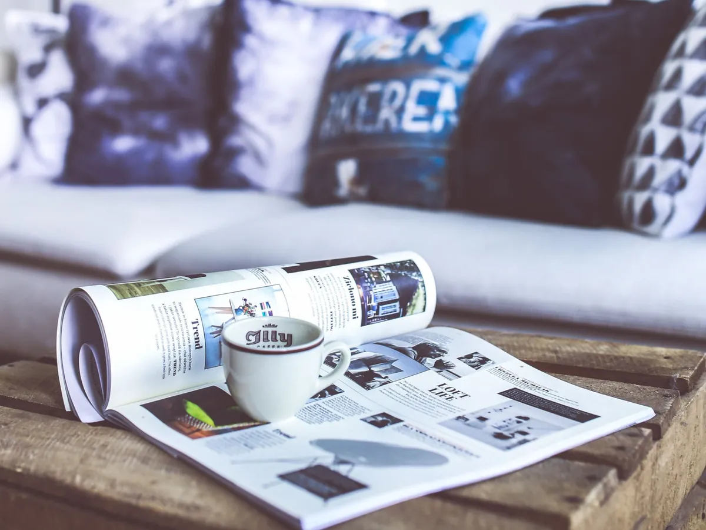
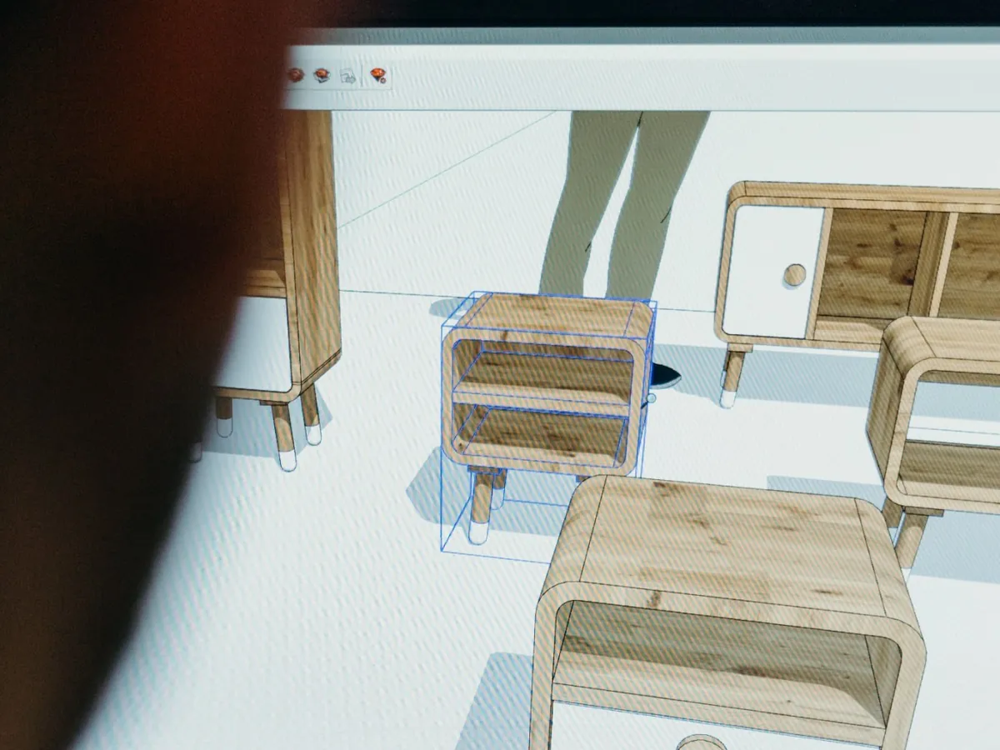
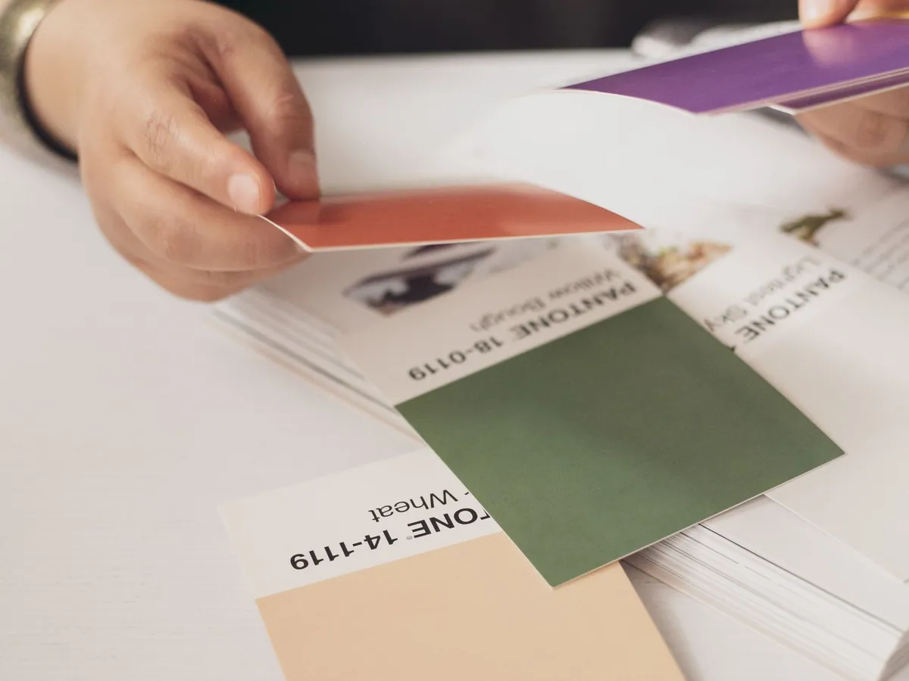
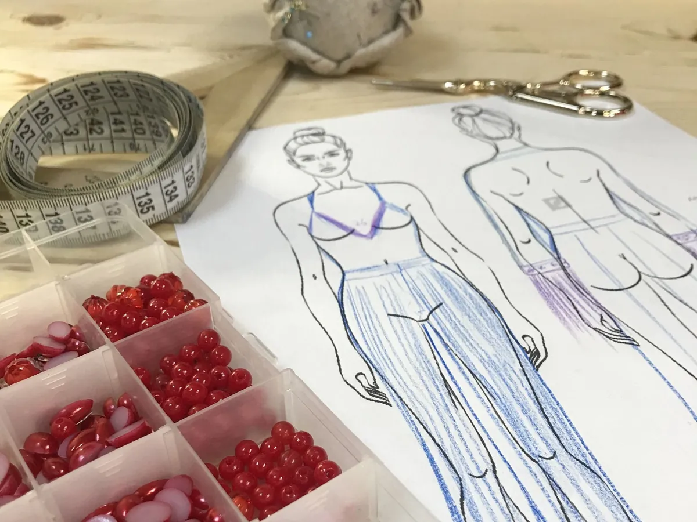

Interiores y Mobiliario
Planos, circulación, iluminación, materiales y diseño de muebles a medida.
- Dibujo técnico y planta
- Color y materialidad
- Mobiliario: del boceto al despiece
Escuela de diseño online
Diplomaturas prácticas de Diseño de Interiores y Mobiliario, Industrial, Gráfico e Indumentaria. Lecciones cortas, ejercicios reales y un asistente de IA que responde tus dudas a cualquier hora.
Cada área tiene su color, su diplomatura y proyectos finales pensados para tu portfolio.
Planos, circulación, iluminación, materiales y diseño de muebles a medida.
Productos que se pueden fabricar: ergonomía, procesos productivos y prototipado.
Identidad visual, tipografía, composición y piezas para redes, editorial y packaging.
Figurín, moldería, textiles y armado de colecciones con identidad propia.

16 semanas · 80 clases · Nivel inicial

16 semanas · 80 clases · Nivel inicial

16 semanas · 80 clases · Nivel inicial

16 semanas · 80 clases · Nivel inicial
Lecturas y videos de 10 a 15 minutos, con láminas, diagramas y ejemplos visuales.
Cada módulo cierra con una consigna práctica y cuestionarios. Subís tu trabajo y recibís devolución al instante.
Tus entregas forman un portfolio descargable y al terminar obtenés tu certificado.
No hay profesor: un asistente que conoce toda la diplomatura te explica, te da ejemplos y revisa tus ejercicios cuando lo necesites.
Bocetador online
Un programa de dibujo asistido pensado para cada carrera. Funciona en el navegador, sin instalar nada, con mouse, con el dedo o con lápiz.
¿Bocetás en papel? Sacale una foto a tu croquis, subila y el asistente de IA lo corrige con marcas numeradas sobre el dibujo.
$63.000 / mes
Una carrera, en 4 cuotas mensuales por suscripción. Al pagar la última, la diplomatura queda tuya para siempre.
Elegir mi diplomatura$83.000 / mes
Acceso a las cuatro diplomaturas y a las nuevas que se sumen, mientras sigas suscripto.
SuscribirmeDesde $175.000
Por alumno y por diplomatura, desde 10 personas. Para escuelas, estudios y equipos.
ContactanosMatrícula única de $45.000. Se paga una sola vez, cuando te inscribís por primera vez, y vale para todas las diplomaturas y planes. Las cuotas se pagan por suscripción mensual, sin tarjeta de crédito: si se interrumpe el pago, se da de baja la inscripción. Podés probar la primera clase de cada diplomatura gratis: la matrícula se abona recién cuando decidís inscribirte.